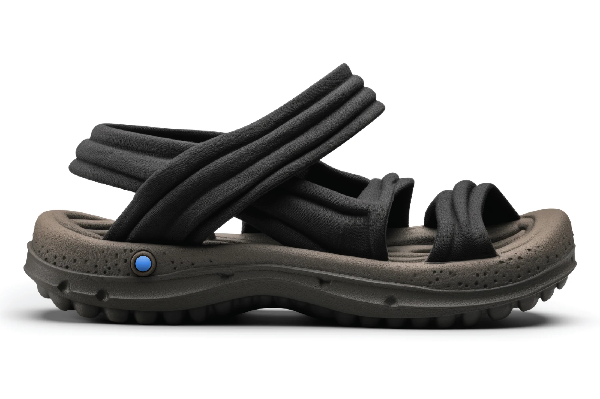
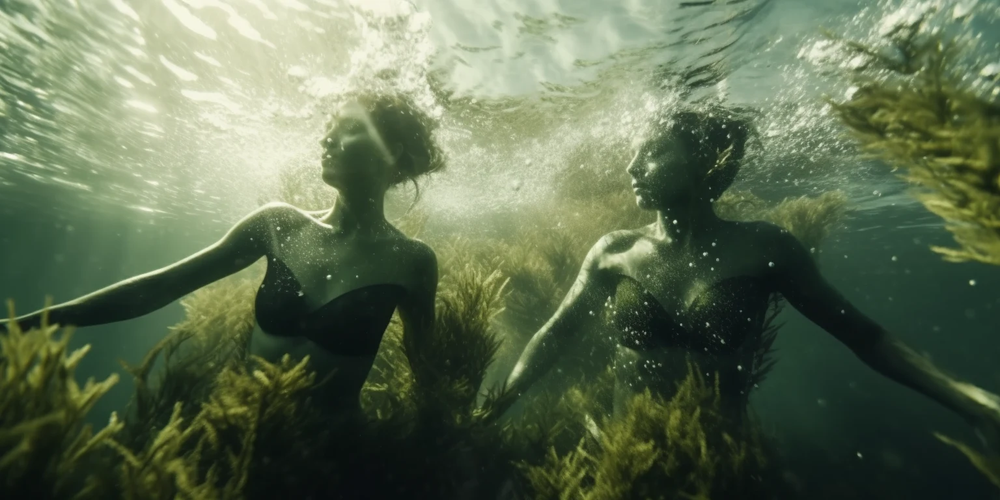
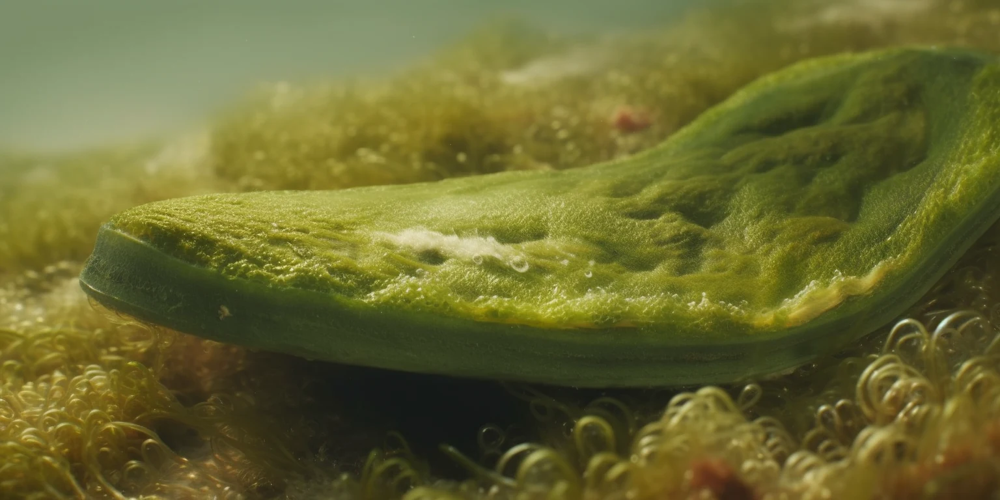
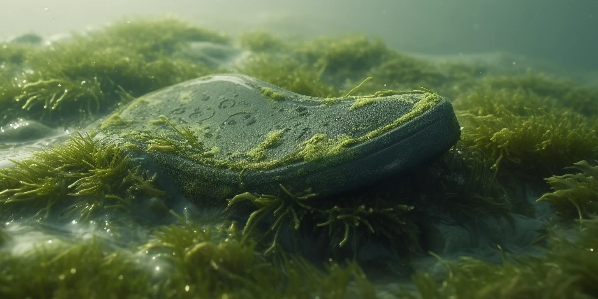
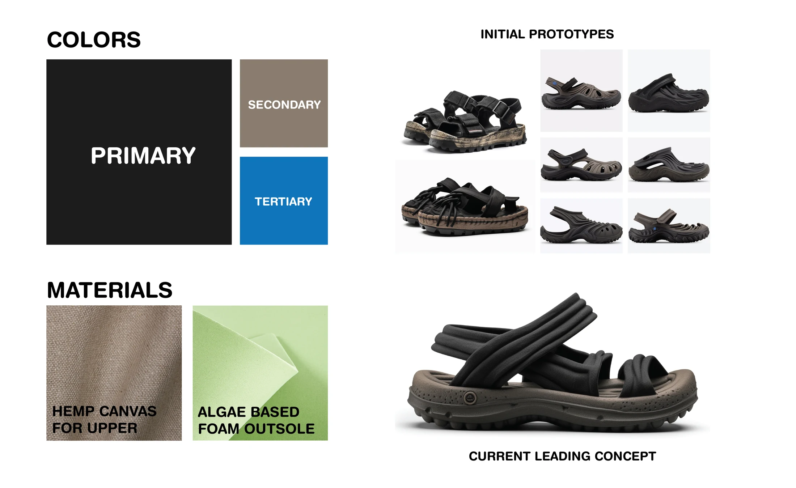
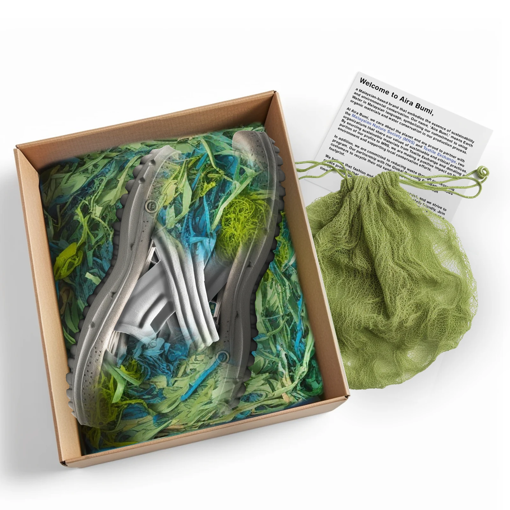

valued comfort as a functional priority
Aira Bumi

Earth’s water, translated into a footwear system.
ExploreThe brief / Malaysia
Build a footwear brand for a generation that expects comfort, material honesty, and a world worth stepping into.
Aira Bumi—“Earth’s Water”—was developed as a group international-markets project. The concept connects Malaysia’s tropical climate and outdoor culture with a three-product system grounded in hemp canvas and algae-based foam.
- My role
- Product design / visual direction
- Team
- M. Nguyen / B. Lee / O. Omar / C. Ha
- Scope
- Research / brand / product / packaging

Not sustainability as decoration.
Sustainability as the material logic.
01 / Material translation
Pull from line
to matter.
Drag the control to move between the restrained technical drawing and the finished Alga Tanah concept.
Object / 03
A soft upper and a sculpted outsole create the project’s central push and pull: flexible against grounded, light against durable.
Alga Tanah BioFoam01
“Land Algae” in Malay. The concept turns harmful algae biomass into an EVA-like foam for the footbed and outsole, making the environmental idea tangible at the point of contact.
Hemp canvas upper02
Layered elasticated straps use hemp canvas for strength, breathability, and a material connection to longstanding regional craft.
Form language03
Repeated padded bands exaggerate movement above a restrained earth-toned base. A small blue fastener becomes the recurring water marker.

Algae becomes architecture.

02 / Product system
Three terrains.
One language.
A restrained control moves through the system; the product stage responds at an intentionally exaggerated scale.
Land Algae
Alga Tanah
A multi-strap sandal built around a hemp canvas upper and algae-foam outsole.

Concept board / colour, material, and prototype convergence
03 / Research signal
46 people.
One clear hierarchy.
named materials as the key sustainability factor
chose walking as a most-enjoyed activity
preferred canvas in footwear
The signal was less about trend and more about use: comfort, longevity, material legibility, and everyday movement.
Open research readout+
80.4% of respondents were 18–25. Black and white led colour preferences; comfort and wearability outranked brand and trendiness. Sustainability interest was present, but the group identified an information and product awareness gap—making transparency part of the brand proposition.
Primary survey / 46 respondents / student research, 2023
04 / Last contact
The world continues after the object.
Recycled card, algae-toned netting, and a fluid interior print turn the unboxing into a final material chapter rather than an afterthought.
